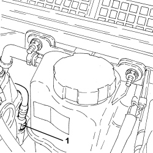
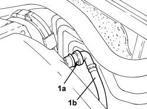

1080D18 OIL VAPOUR PIPE FROM RIGHT CYLINDER HEAD TAPPET COVER TO INTAKE CHAMBER - R.R.
- Path
- Procedures > 10 ENGINE > 1080 EMISSION CONTROL SYSTEM > 1080D CRANKCASE VAPOUR/GAS RECIRCULATION SYSTEM > 1080D18 OIL VAPOUR PIPE FROM RIGHT CYLINDER HEAD TAPPET COVER TO INTAKE CHAMBER - R.R.
- Kind
- repair procedure (removal / refitting; the operation number is the code)
- Applies to
- engines: 3.2 JTS; all production periods
- Interactive page
- https://sloeber94.github.io/elrnDB-aBrrSpdr/en/#/946001976
Applies to: engines: 3.2 JTS; all production periods
 Removing
Removing
 Refitting
RefittingOp. 1016A10 SOUND-PROOFING COVER - R.R
1. Disconnect the rapid connector for the oil vapour pipe from the connector on the right head tappet cover.

Applies to: engines: 3.2 JTS; all production periods
1. Release the connector (1a) for the oil vapour pipe (1b) from the intake chamber and remove it.
- Remove the O-ring from the connector (1a).

Applies to: engines: 3.2 JTS; all production periods
Refitting
Removing- Fit a new O-ring on the connector for the oil vapour pipe and connect it to the intake chamber.
- Connect the rapid connector for the oil vapour pipe to the connector on the right head tappet cover.